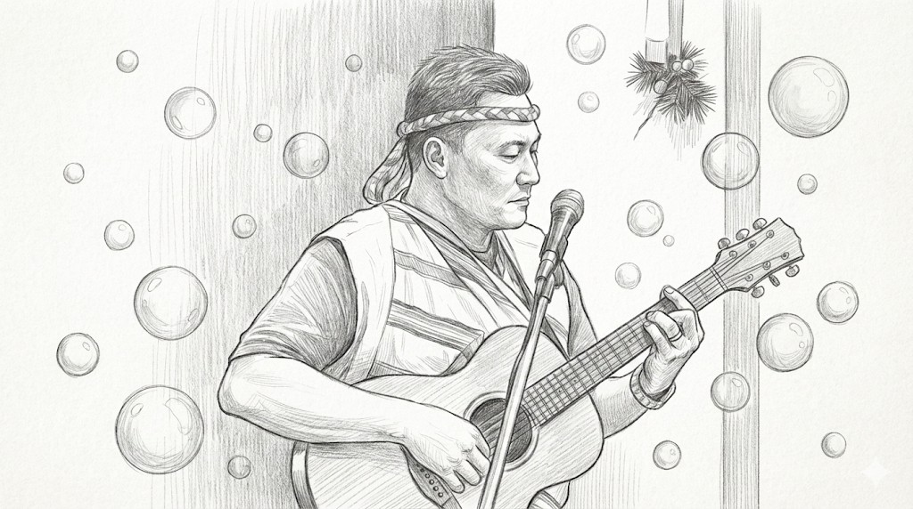
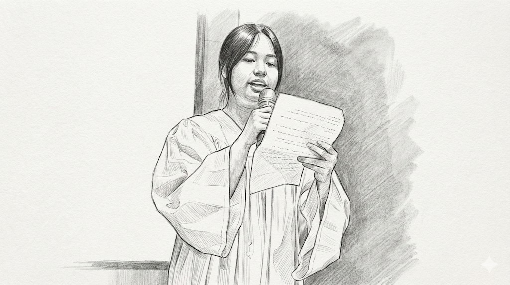
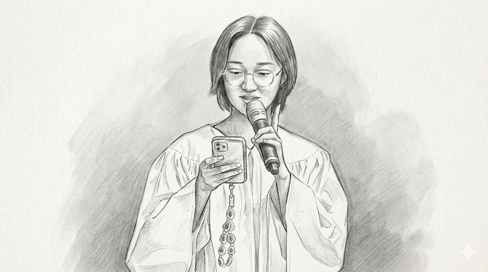
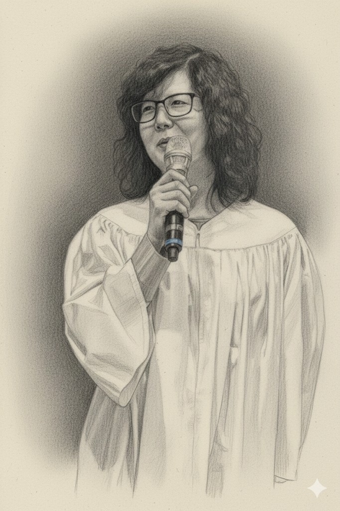
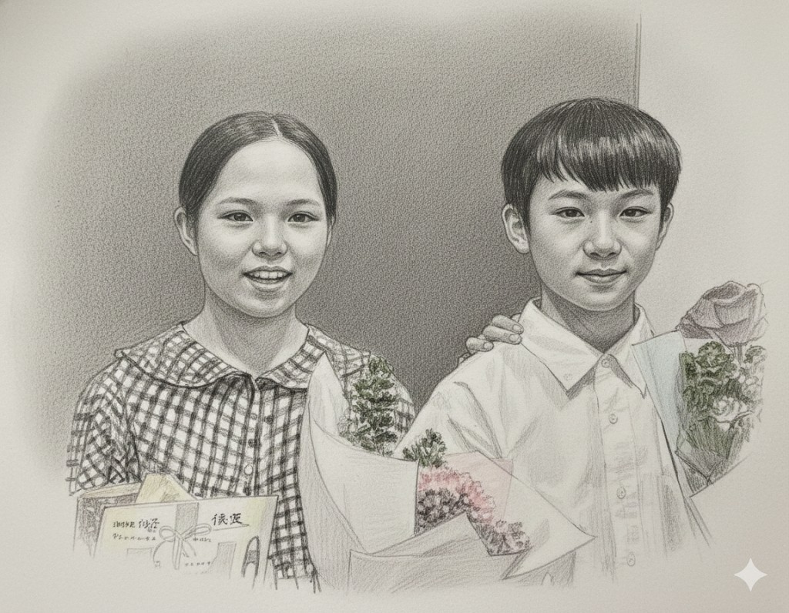
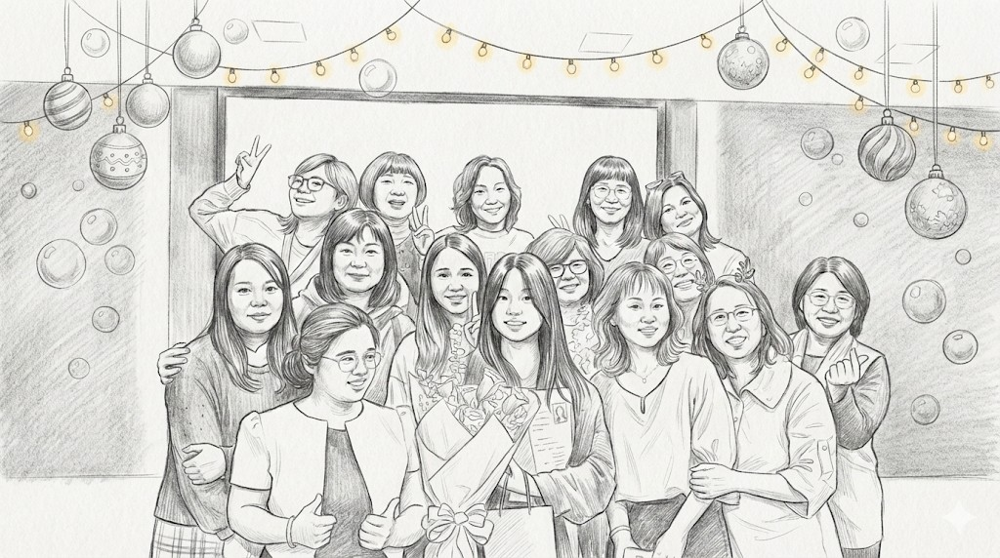

1. 前言：一場洗禮儀式中的生命交響曲
我看過許多生命的起落，主持過無數次的洗禮儀式。然而，有些時刻，聖靈的工作是如此清晰可見，以至於整個會堂都彷彿被一種神聖的暖流所充滿。五位年齡、背景、生命歷程截然不同的弟兄姐妹，勇敢地站上講台，分享了他們從破碎到新生的旅程。他們的聲音，交織成一首動人心弦的生命交響曲。
這份源於那份深刻的感動。目的不僅是記錄下這些珍貴的分享，更深入剖析貫穿其中的核心主題——生命的轉化。一同探討，那份看不見的信仰，是如何在日復一日的品格塑造中，發揮出翻轉生命的力量。
在接下來的篇幅裡，我將邀請您暫時放下世界的喧囂，靜下心來，一同走進這些充滿淚水與盼望的真實故事。願這些分享，不只是一段段過往的經歷，更能成為一扇扇窗，讓我們窺見那份足以改變一切的愛與大能。

2. 核心主題與總結要訣
在深入每一段獨特的生命敘事之前，若我們先從一個更高的視角俯瞰，會發現這五個見證與一篇講道，正共同譜寫著一首清晰的主旋律。它們指向同一個核心信息，並為我們提煉出幾項關鍵且可實踐的要訣。
核心論點分析
綜合所有分享，我們可以清晰地看到一個貫穿始終的中心論點：
與耶穌基督建立真實的個人關係，是帶來生命全面轉化的關鍵動力，能引導人從破碎走向完整，從黑暗走向光明。
這並非一句空泛的口號，而是透過彤彤的和解、祉辛的醫治、莫莉的順服、可佳與可揚的成長，以及牧師講道的神學框架所共同驗證的真理。
總結要訣
那麼，這條轉化之路的具體路徑為何？從這些見證中，我們歸納出四個不可或缺的關鍵要素：
- 坦誠的禱告： 這是最直接、也最根本的行動。無論是彤彤面對人際霸凌的無助，還是可佳、可揚面對自身不完美的掙扎，禱告成為他們尋求改變、支取力量的第一步，是與神連結的生命線。
- 話語的錨定： 當情感的風暴來襲，聖經的話語扮演了穩固生命的錨。祉辛在病房的絕望中，因一句經文得著信心；莫莉在信心的懷疑中，靠著應許的話語選擇順服。話語提供了超越環境的盼望與方向。
- 主權的交託： 真正的轉化，始於承認自己的有限。莫莉所說的「交出控制權」，與牧師講道中「更換生命的主人」的概念遙相呼應。這份「順服」，不是消極的放棄，而是積極地邀請一位更有能力的主來掌管，是經歷神作為的先決條件。
- 群體的扶持： 沒有任何人的信仰是孤島。我們看到彤彤感謝家人的代禱、祉辛細數身邊的「天使」——從媽媽不斷的肯定、二姐拉著她讀經，到教會家人的陪伴、莫莉倚靠小組姐妹的支持。家庭與教會群體，提供了接納、鼓勵與陪伴，是這條路上至關重要的同行者。
3. 論點綱要：生命轉化的路徑圖
以下是綱要卡片的形式呈現。每一張卡片都代表著一個關鍵的轉化領域，它們共同構成了一幅從個人經歷到神學框架的完整路徑圖。
這些卡片，便是我們接下來深度分析的藍圖。
4. 論點與見證的深度解析
現在，讓我們逐一深入探討這些論點，看見神學如何與生命交織，理論如何化為真實的經歷。
4.1 關係的醫治：從饒恕的禱告到 180 度的轉變
人際關係的衝突與傷害，是我們生命中最普遍的痛點之一。在這些糾結難解的困境中，信仰提供了一條超越性的出路——它始於一個看似簡單、卻極具力量的行動：禱告。
彤彤：從人際痛苦到「化妝的祝福」

彤彤的見證是一個關於饒恕與關係翻轉的生動範例。她曾因與同學間的誤會，陷入深度的無助與「無望感」，痛苦到每天晚上都「很不想去學校」，害怕面對外在環境與他人的言論。
這段低潮的轉捩點源於她與母親的每日夜禱。在母親的教導下，她學習了 「饒恕」那些傷害她的人，並為彼此的合好祈求。這個過程首先帶來了她內在的改變，使她變得更加堅強與自信，不再懼怕周遭的流言蜚語，能勇敢在校園中做自己。
神的回應最終透過一場「熱舞比賽」巧妙顯現，讓她與那位有嫌隙的同學共同擔任隊長。因著彤彤持續的禱告，對方主動傳訊息與她討論比賽事宜，使雙方關係發生 180 度的轉變，從原本無法相處轉為能熱絡聊天的朋友。彤彤將這段從痛苦到和睦的成長經歷稱為 「化妝的祝福」，並引用馬太福音 21 章 22 節：「你們禱告，無論求什麼，只要信，就必得著」，作為她信心禱告的神學總結,。
深度闡釋： 在神學上，「饒恕」不僅僅是情感上的放下，更是一種意志上的選擇，是效法基督的行動。彤彤的經歷告訴我們，饒恕的禱告是邀請神介入這段關係，祂不僅能醫治我們內心的傷痛，更有能力改變環境與人心，將看似無法挽回的局面，轉化為彼此成長的祝福。
除了外在關係的和解，信仰的力量更能觸及我們內心深處最隱密的創傷。
4.2 祉辛：在絕望深淵中尋回神兒女的身份

在現代社會高度的壓力下，精神與心理的健康挑戰日益嚴峻。祉辛的見證，為這個時代的痛，提供了一個來自信仰的深刻洞見與盼望。
年僅 20 歲的祉辛，背負著原生家庭的重擔、感情的創傷，以及憂鬱症、過動症、恐慌症的多重折磨。她的生命一度下沉到谷底，在病房中，她感到失去自由與自尊，被全世界遺棄。那是一種言語難以形容的絕望。
然而，正是在這最深的黑暗中，一束光照了進來。她在閱讀《荒漠甘泉》時，讀到羅馬書 8 章 18 節：「我想，現在的苦楚若比起將來要顯於我們的榮耀，就不足介意了。」這句經文，像一把鑰匙，瞬間打開了她信心的門。聖經的話語持續成為她的錨，如同使徒行傳 27 章 25 節所宣告的：「我信神他怎樣對我說，事情也要怎麼樣成就」，給予她走下去的力量。
她生命的轉變是如此真實而顯著。過去在人群中會恐慌的她，如今能站在眾人面前分享見證，她稱之為「上帝醫治的奇蹟」。更重要的是內在的改變，她引用哥林多後書 5 章 17 節，宣告自己已是「新造的人」，從一個「滿心怨恨」的女孩，轉變為一個懂得感恩與原諒的人。這一切的根基，在於她找回了一個全新的自我認同——不再是那個不被重視的孩子，而是 「神寶貝的兒女」。
深度闡釋： 祉辛的故事深刻地揭示了「身份認同」對於心理健康的巨大影響。當一個人認知到自己的價值，並非建立在人的評價或環境的順逆之上，而是源於一位創造主無條件的愛與揀選時，他的自我價值感與存在意義將被徹底重塑。這份從神而來的身份，成為了她走出絕望、戰勝恐懼最堅實的磐石。
值得注意的是，神的醫治並非抽離於現實。在祉辛的見證中，她不斷感謝身邊的「天使」——媽媽的肯定、二姐拉著她讀經、教會家人的陪伴。這提醒我們，神常常透過祂所設立的群體，也就是教會與家庭，來施行祂的恩典與扶持。這些看得見的愛，成為了那看不見的恩典最溫暖的載體。
祉辛的經歷也印證了莫莉所言，真實的信仰，必然會經過掙扎與淬鍊。
4.3 莫莉：信心的淬鍊，穿越懷疑的迷霧，學會交託主權

許多人誤以為，信仰是一條永遠陽光普照、平坦順遂的道路。然而，莫莉的見證卻勇敢地揭示了信心的真實面貌。她說：
「沒有掙扎過的信仰不是真實的信仰，沒有懷疑過的信心不是真實的信心。」
這句話，道出了許多基督徒內心深處的共鳴。莫莉坦誠，她也曾被忙碌的生活和世界的聲音所影響，對神有過許多質疑。但她智慧地指出，這並不是信仰的「破口」，而是「生命正在經過」的必然過程。
面對懷疑的迷霧，她的解決之道並非靠自己的意志力去掃除，而是回到神的話語中。以賽亞書 41 章 10 節的應許，成為她前行的力量。她學習在看不見時，仍然選擇「順服」；在未知的道路上，依然選擇跟隨。她禱告的關鍵詞是：「交出控制權」，安靜地等候。在這段掙扎的旅程中，她並非獨行，她特別感謝「雲彩小組」的姐妹們，她們的打氣與陪伴，再次印證了信仰群體在個人信心歷程中的重要性。
深度闡釋： 「交託主權」是基督信仰中一個極為核心的神學概念。它並非消極的放棄或不負責任，而是一種積極的信靠。它承認人的智慧與能力是有限的，並相信神的計劃與帶領遠超過我們所能想像。當我們願意放手，讓神來掌權時，反而能得著真正的力量、智慧與超越環境的平安。莫莉的經歷證明，正是在這交託的過程中，信心才得以被煉淨，變得更加堅實。
這種內在生命的轉變，最終必然會體現在我們外在的品格與日常的行為上。
4.4 可揚：品格的塑造，在日常中活出神所喜悅的樣式
信仰的果效，不僅關乎永恆的救贖，也深刻地影響著我們在世的每一天，塑造我們的品格與行為。可揚的見證，雖然言語單純，卻精準地揭示了這個真理。
身為第六代基督徒，目前就讀國小六年級的可揚，從小就認知到一個基礎神學——「人都會犯罪」。他誠實地面對自己「並不完美」之處，例如有時候會說謊、會討厭人。他沒有選擇掩飾或靠自己去改正，而是透過禱告，尋求神幫助他學習「包容別人、原諒別人」，並倚靠主耶穌的力量去「做上帝喜歡的事」。
他的分享清楚地展現了一條品格塑造的路徑：認識自己的不足，將這份軟弱帶到神面前，並相信神有能力改變那些「我原本做不到的事」。這與他雙胞胎妹妹可佳學習靠禱告與哥哥和睦相處的經歷，共同指向了一個核心，即依靠神的力量活出美善。
4.5 可佳：單純信心下的「彼此相愛」
可佳的分享則體現了將信仰原則 落實在日常家庭生活中的單純與美好。身為第六代基督徒，目前就讀國小六年級的她，早在四年級時就決志接受耶穌成為救主。
她將聖經中 「彼此相愛」的教導直接應用在與雙胞胎哥哥的相處上。過去她常覺得哥哥很煩，兩人頻繁吵架、打架。然而，她選擇將這份困擾帶到神面前，透過禱告求上帝幫助她「不要生氣」，並改善兄妹間的關係。
這種簡單而真誠的祈求帶來了實質的改變。她分享道，現在她能感受到耶穌的陪伴，且與哥哥之間
「現在我們很少吵架了」。可佳的經歷證明了，即便是年幼的孩子，只要願意實踐真理並尋求神的幫助，也能在微小的日常互動中經歷到神聽禱告的真實與平安。

深度闡釋： 可揚的見證，以最純粹的形式，展現了基督教信仰的核心教義：首先，是誠實地承認己罪（神學上稱為「認罪」），認知到自己的不完美與對救恩的需要。其次，是依靠神恩，明白生命的改變並非來自人的意志力，而是來自聖靈在內心的工作。他的故事提醒我們，成聖的道路是一生之久、每日每刻的學習與倚靠。
所有這些個人層面的轉化故事——關係的和好、心靈的醫治、信心的堅固、品格的成長——最終都在我的講道中，得到了一個宏大神學框架的整合與昇華。
5. 牧師講道總結：「開門的那位正等著」

在最後的講道中，我嘗試為前面所有動人的見證，提供一個堅實的神學框架。目標是將這些個人的生命經歷，與耶穌基督降生、受死、復活這一宏大的救贖計劃連結起來，說明這一切的改變，都源於那位「開門的那位正等著」的主。
| 講道段落 | 核心論述與摘要 |
|---|---|
| 引言：聖誕節的真義 | 闡釋聖誕節的真正意義超越商業活動與節日氛圍，核心是宣告一個好消息：耶穌為我們降生，帶來一條全新的「生命的路、真光的路以及救恩的路」。 |
| 窄門：唯一的生命道路 | 強調耶穌提供的道路是「窄門」，與世人隨心所欲的「寬門大路」形成對比。進入此門並非依靠個人的善行或努力積累功德，因為驕傲本身就是罪。此處明確指出，耶穌是通往神的唯一道路、真理與生命。 |
| 生命的翻轉與改觀 | 論述信仰不僅是行為的稍微改善，而是「整個生命的方向轉向」，是生命主人的更換。當神進入生命，人會變得柔軟、懂得饒恕，如同見證者們所經歷的人際關係轉變一樣，這是神生命彰顯的明證。 |
| 真光：從黑暗到光明 | 以民間習俗「點光明燈」作對比，強調「耶穌自己就是光」。這道光能照亮人生命的真正價值，使人不再需要與他人比較；同時也讓人對罪變得敏銳，看見自己需要救恩。這光的目的不是審判，而是拯救與指引。 |
| 結論與呼召 | 總結受洗的意義是與基督連結，得著「新生的樣式」。呼召聽眾做出選擇：進入窄門不是損失，而是得到真正的生命，是「從過去走向未來，從舊人走向新人，從黑暗走向光明」。最後帶領決志禱告，邀請人將生命主權完全交給主。 |
6. 總結代禱
回顧這趟分析之旅，彷彿親身走過了五段截然不同、卻又殊途同歸的生命路程。從彤彤在破碎關係中學會饒恕、祉辛在精神深淵裡被重新擁抱、莫莉在信心迷霧中選擇交託，到可佳與可揚在日常生活中尋求品格的成長——這一切都清晰地指向一個共同的源頭：那份因著認識並信靠耶穌基督，而帶來的真實、深刻且全面的生命轉化。
親愛的天父，我們為此獻上滿心的感恩。
感謝祢，讓我們有機會聆聽彤彤、祉辛、莫莉、可佳、可揚這五位祢所愛的兒女，如此勇敢、真誠地分享他們的生命故事。謝謝祢在他們生命中所行的奇事，將他們的眼淚化為珍珠，將他們的傷痕化為榮耀的見證。
主啊，我們也為每一位閱讀這份報告的人禱告。求祢的聖靈親自觸摸他們的心，讓這些真實的故事，不只是理性的分析，更能成為感性的觸動。對於那些正經歷關係破裂、內心痛苦、信心懷疑的讀者，我們懇求祢，將同樣的醫治、釋放與盼望，也賜給他們。願他們知道，他們並不孤單，那位「開門的那位正等著」的主，也同樣在等候著他們。
願一切的頌讚、榮耀都歸給祢，直到永遠。
奉主耶穌基督得勝的名禱告，阿們。